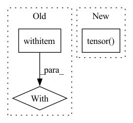

Pattern ID :19368
Before Change
self.list_of_eligible_wave_paths = list(self.list_of_eligible_wave_paths)
self.waves = list()
for path in tqdm(self.list_of_eligible_wave_paths):
with open(path, "rb") as audio_file:
wave_orig, _ = sf.read(audio_file)
self.waves.append(self.preprocess_ap.audio_to_wave_tensor(wave_orig, normalize=True, mulaw=False))
print("{} eligible audios found".format(len(self.waves)))
After Change
numpy_waves = list(self.waves)
self.waves = list()
for wave in numpy_waves:
self.waves.append(torch.tensor( wave) )
torch.save(self.waves, os.path.join(cache_dir, "waves.pt"))
else:
self.waves = torch.load(os.path.join(cache_dir, "waves.pt"), map_location="cpu")In pattern: SUPERPATTERN
Frequency: 3
Non-data size: 3
Instances Fragment ID: 63147136
Project Name: digitalphonetics/ims-toucan
Commit Name: c762d97e04a62c8f3d839cc12c1f3c2b375bde9e
Time: 2021-10-28
Author: florian.lux@ims.uni-stuttgart.de
File Name: TrainingInterfaces/Spectrogram_to_Wave/HiFIGAN/HiFiGANDataset.py
M Class Name: HiFiGANDataset
N Class Name: HiFiGANDataset
M Method Name: __init__(6)
N Method Name: __init__(5)
M Parent Class: Dataset
N Parent Class: Dataset
M File Name: TrainingInterfaces/Spectrogram_to_Wave/HiFIGAN/HiFiGANDataset.py
N File Name: TrainingInterfaces/Spectrogram_to_Wave/HiFIGAN/HiFiGANDataset.py
M Start Line: 23
M End Line: 49
N Start Line: 17
N End Line: 54
Before Change
def _get_data(self):
Download data and form X, y, length tensors.
all_data = [None] * len(self.DATASETS)
for i, url in enumerate(self.DATASETS.values()):
with tempfile.TemporaryDirectory() as temp_dir:
self._download_zip(url, temp_dir)
all_data[i] = self._process_set(temp_dir)
// Form tensors
X = torch.cat([X for X, _ in all_data]) // may fail if data is updatedAfter Change
)
// Form tensors
X = torch.cat(all_data)
length = torch.tensor( length)
y = X[:, :, -1].unsqueeze(2)
X = X[:, :, :-1]
return X, y, length
Fragment ID: 63147135
Project Name: philipdarke/torchtime
Commit Name: b0572fe4d4d144884818859d839b500dcf12cc9b
Time: 2022-04-25
Author: 43066442+philipdarke@users.noreply.github.com
File Name: src/torchtime/data.py
M Class Name: PhysioNet2019
N Class Name: PhysioNet2019
M Method Name: _get_data(1)
N Method Name: _get_data(1)
M Parent Class: _TimeSeriesDataset
N Parent Class: _TimeSeriesDataset
M File Name: src/torchtime/data.py
N File Name: src/torchtime/data.py
M Start Line: 700
M End Line: 707
N Start Line: 1055
N End Line: 1069
Before Change
n_atoms_per_batch[-1] = 1
lbox = np.cbrt(num_particles / density);
batch = torch.tensor([i for i in range(n_batches) for j in range(n_atoms_per_batch[i])], device=device)
cumsum = np.cumsum( np.concatenate([[0], n_atoms_per_batch]))
pos = torch.rand(cumsum[-1], 3, device=device)*lbox
max_num_pairs = torch.tensor(expected_num_neighbors * n_atoms_per_batch.sum(), dtype=torch.int64).item()
nl = DistanceCellList(cutoff_upper=cutoff, max_num_pairs=max_num_pairs, strategy=strategy)
//Warmup
neighbors, distances, distance_vecs = nl(pos, batch)
if device == "cuda":
torch.cuda.synchronize()
//Benchmark using torch profiler
nruns = 100
if device == "cuda":
torch.cuda.synchronize()
start = torch.cuda.Event(enable_timing=True)
end = torch.cuda.Event(enable_timing=True)
start.record()
with torch.autograd.profiler.profile(use_cuda=True) as prof:
for i in range(nruns):
neighbors, distances, distance_vecs = nl(pos, batch)
end.record()
if device == "cuda":After Change
n_atoms_per_batch[-1] = 1
lbox = np.cbrt(num_particles / density);
batch = torch.repeat_interleave(torch.arange(n_batches, dtype=torch.int32, device=device), torch.tensor( n_atoms_per_batch, dtype=torch.int32, device=device) )
cumsum = np.cumsum( np.concatenate([[0], n_atoms_per_batch]))
pos = torch.rand(cumsum[-1], 3, device=device)*lbox Fragment ID: 63147134
Project Name: torchmd/torchmd-net
Commit Name: 9afad752e238413a0904aa2d11f9396d895c1a5d
Time: 2023-05-03
Author: raulppelaez@gmail.com
File Name: benchmarks/neighbors.py
M Class Name: AnonimousClass
N Class Name: AnonimousClass
M Method Name: benchmark_neighbors(5)
N Method Name: benchmark_neighbors(4)
M Parent Class:
N Parent Class:
M File Name: benchmarks/neighbors.py
N File Name: benchmarks/neighbors.py
M Start Line: 26
M End Line: 57
N Start Line: 7
N End Line: 57